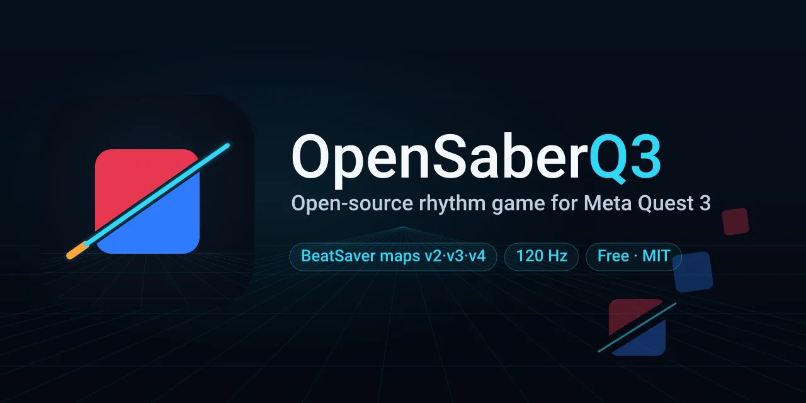

OpenSaberQ3
I love rhythm games. I wanted one on my Quest 3 that anyone could open up, fix, and improve.
A free, open-source rhythm game for Meta Quest 3. It plays community BeatSaver maps in every current format, runs at 120 Hz, and has an in-headset map browser and BeatLeader leaderboards.
- Godot 4.6
- 120 Hz
- Maps v2, v3, v4
- Free, MIT license